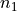
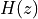

L9: Adaptive Filters¶
The purpose of this lecture is as follows.
- To discuss the purpose of adaptive filters
- To illustrate common applications solved using adaptive filters
- To describe the Least-Mean-Squares algorithm to adapt and optimize filter coefficients
- To illustrate adaptive filter applications on the MSP432 kit with BoostXL Audio Interface
Basic Adaptive Filter¶
An adaptive filter is a filter with non-constant coefficients. The filter coefficients are adjusted based on an criterium which is often defined to optimize the performance of the filter in its ability to estimate an unknown quantity in an input signal.
In this lecture, we will limit ourselves to adaptive FIR filters. The basic outline of an adaptive FIR filter is shown in the following figure. The filter accepts an input signal x and produces an output signal y. The FIR coefficients of this filter are adjustable, meaning that at every new sample of x, the coefficients can take on a new value. The new value of filter coefficients is determined using a coefficient update algorithm, which computes an adjustment for each filter coefficient based on an error signal e. The error signal e is typically computed as the difference between the actual output signal y and a desired output signal d.
The desired output signal d depends on the specific application of the adaptive filter. However, the adaptive algorithm will change the coefficients so as to minimize the mean squared value of the error signal e. That is, given that the filter output is defined by filter coefficients , we try to minimize the expected square error:
There are generally four different configurations common for an adaptive filter:
- System Identification
- Noise Cancellation
- Equalization
- Adaptive Prediction
System Identification¶
In system identification, we observe an unknown system and compare its output to an adaptive filter. By applying broadband noise to the input, and by minimizing the error signal, the filter coefficients will converge to a set of coefficients that reflect the characteristic of the unknown system. This approximation is best-effort; known the filter coefficients of the adaptive filter does not imply that we can reveal the internal structure of the unknown system. For example, the unknown system could be an IIR filter, while the adaptive filter has an FIR design. Or, the unknown system could include non-linear behavior, while the adaptive filter has an FIR design.
Noise Cancellation¶
In Noise Cancellation, we are interested in removing a known disturbance  from a signal.
The disturbance is affected by the system dynamics  into , so that we are unsure how much the input signal is affected by the disturbance. Using an adaptive filter, we
estimate the system dynamics (in a similar fashion as with system identification), and
we remove the filtered disturbance from the output signal. The output signal, in the case of
noise cancellation, is created out of the error signal, which in this case will closely
resembly the input signal  .
.
A well-known application for this setup is echo cancellation in speakerphone design. In this case, the input signal is the speech signal from the local side, and the disturbance is the speech signal from the remote side. The remote speech signal is played back on the local speaker and picked up by the local microphone. The adaptive filter will estimate this local feedback and remote it from the output signal, thereby preventing the return of an echo to the remote side.
Equalization¶
In equalization, we are using an adaptive filter to remove (linear) distortions from
a received signal. This is a common problem in data communictions, when signals are
distored by a non-allpass communications channel. The adaptive filter creates
an inverse response to the distortion, using a delayed version of the correct input
signal , in order to restore the received signal to its original form.
One may wonder how such a delayed version of can be transmitted, when
it’s not possible to transmit the real-time version . The answer is that
this delayed does not have to be identical to the real-time . In other words,
the equalizer can first go through a training phase, during which the coefficients
are adapted in order to match the characteristics of the communications channel. Next,
the adaptive filter coefficients are fixed, and the real-time transmission
can start.
A well-known example of an equalizer training sequence can be heard in the startup sequence of an voiceband modem. While voiceband modems are largely a thing of the past now, this youtube link gives you an idea how that sounded like.
Adaptive Prediction¶
A final configuration for adaptive filters is in adaptive prediction, where an adaptive filter is used to predict the future value of a signal. The adaptive filter coefficients form a prediction, which can be used for signal encoding. For example, speech can be compressed to a few kilobit per second for use in cell phone applications.
Computing the coefficients of an adaptive filter¶
An adaptive filter implemented as an FIR with N taps and weights filters input samples . At the nth sample instant, the output of the filter is given by the dot product of and :
The instantaneous error at the nth sample instant is given by the difference of and .
The instantaneous squared error signal is given by:
Note that we make use of the property .
We are interested in minimizing the expected value of the squared error signal, and we will do this by making changes to the filter weights . Hence, we differentiate the expression for with respect to and look for a minimum.
An iterative version of this algorithm will therefore use the value of this derivative to decide on how to adjust the coefficients. A well known strategy is steepest decent, which means that you’ll make a change which is a fraction of the derivative at the point where the derivative is computed. In other words, you compute the coefficient series as follows. In this formula,  is a constant much smaller then 1.
is a constant much smaller then 1.
The Least Mean Squares (or LMS) filtering algorithm is an adaptive FIR where coefficients are adjusted according to an error signal as in the previous formula.
We will next look at several programming examples to illustrate the LMS algorithm in action.
Examples of LMS Filters¶
Basic Adaptive Filter¶
We start with a basic illustration of the adaptive filter algorithm. Recall that the purpose of an LMS filter is to filter an input signal  into an output signal . At every sample of
x, the filter coefficients can be adjusted in order to make the output signal more similar
to a desired output signal .
into an output signal . At every sample of
x, the filter coefficients can be adjusted in order to make the output signal more similar
to a desired output signal .
The following illustrates this for a 21-tap LMS filter. The input signal is a sine function (at 8 samples per sine period, i.e., with frequency ). The desired signal is a cosine function at the same frequency, but twice the amplitude. We run the filter over a number of iterations while storing the computed output signal and the error signal . The initial filter coefficients are set to zero, so that the filter initially will pass no output.
The following program is somewhat uncommon when compared to our previous examples, as it does not real-time filtering. Instead, its purpose is to illustrate how LMS filter coefficients are iteratively computed.
#define BETA 0.01f
#define N 21
#define ITER 200
float32_t w[N] = {0.0};
float32_t x[N] = {0.0};
#include <stdio.h>
// #define PRINTOUT
int main(void) {
WDT_A_hold(WDT_A_BASE);
int t, i;
float32_t y, e, d;
float32_t y_graph[ITER] = {0.};
float32_t e_graph[ITER] = {0.};
float32_t d_graph[ITER] = {0.};
printf("--------------\n");
for (t = 0; t < ITER; t++) {
// new input
x[0] = sin(2*PI*t/8);
// desired output
d = 2*cos(2*PI*t/8);
// computed output
y = 0.;
for (i=0; i<N; i++)
y += w[i]*x[i];
// error
e = d - y;
// update coefficients
for (i=N; i >= 0; i--)
w[i] += BETA * e * x[i];
// shift delay line
for (i=N-1; i > 0; i--)
x[i] = x[i-1];
y_graph[t] = y;
e_graph[t] = e;
d_graph[t] = d;
#ifdef PRINTOUT
printf("%3d %+8.7f %+8.7f %+8.7f\n", t, d, y, e);
#endif
}
#ifdef PRINTOUT
printf("Filter Taps:\n");
for (i=0; i<N; i++)
printf("%3d %+8.7f\n", i, w[i]);
#endif
while (1) ;
}
While running the program, you can either print the coefficients to the terminal (by defining the macro PRINTOUT), or else store the relevant output in three arrays y_graph, e_graph and d_graph. The latter can be used with the Graph Plotting facility in Code Composer Studio.
The plot of the error signal shows that the filter converges in around 100 samples to almost zero. That means that, while observing 100 samples of the signal, the output converges to the desired output signal.
Error signal of the LMS filter while approximating 2*cos(2*PI*t/8) from sin(2*PI*t/8)
Output signal of the LMS filter while approximating 2*cos(2*PI*t/8) from sin(2*PI*t/8)
In contrast to what you’d expect, the LMS filter coefficients are not just a simple delay, but rather a combination of filter taps. Uncomment the PRINTOUT macro to see a list of the resulting coefficients.
Noise Filtering¶
The second example of an LMS filter illustrates how an LMS filter can remove a (known) noise component, even when that noise component is bigger and more prevalent than the true signal.
In the following example, a 1 KHz sine wave is injected at the input of the filter (noise signal n1). That noise signal is also added to the samples taken from the A/D conversion, creating a noisey input n1 +x. The output of the adaptive filter is then subtracted from the noisy input to create an error signal e. The error signal then adjusts the filter coefficients.
In the application, pressing the left button clears the filter coefficients, and when that happens the output becomes severely distorted. Only when the LMS filter converges again, is the input signal restored.
#define BETA 0.01f
#define N 21
float32_t w[N] = {0.0};
float32_t x[N] = {0.0};
float32_t sinlu[16];
unsigned luptr = 0;
void initlu() {
int i;
for (i=0; i<16; i++)
sinlu[i] = 0.05 * sin(2 * PI * i / 16.0);
}
#include <stdio.h>
uint16_t processSample(uint16_t s) {
int i;
float32_t noise = sinlu[luptr];
luptr = (luptr + 1) % 16;
x[0] = noise;
float32_t input = adc14_to_f32(s) + noise;
// compute filter output
float32_t y = 0.;
for (i=0; i<N; i++) {
y += w[i]*x[i];
}
// error
float32_t e = input - y;
if (pushButtonLeftDown()) {
// clear coefficients
for (i=N-1; i >= 0; i--)
w[i] = 0.;
} else {
// update coefficients
for (i=N-1; i >= 0; i--)
w[i] += BETA * e * x[i];
}
// shift delay line
for (i=N-1; i > 0; i--)
x[i] = x[i-1];
return f32_to_dac14(e);
}
int main(void) {
WDT_A_hold(WDT_A_BASE);
initlu();
msp432_boostxl_init_intr(FS_16000_HZ, BOOSTXL_J1_2_IN, processSample);
msp432_boostxl_run();
return 1;
}
System Identification¶
The third example illustrates the use of an LMS to perform system identification. In this example, we’ll generate a noise signal and play the noise of the DAC. The noise is also fed as the input of an adaptive filter. The ADC input is used as the desired signal d, which will be approximated through the adaptive filter. When the average error is reduced to zero, the adaptive filter will have converged to represent a system that includes a DAC, an external signal path, and an ADC.
The following program enables you to experiment with system identification. The left button can be pressed to clear the filter coefficients. The right button can be pressed to play back the filter coefficients over the DAC output. This allows you to observe the filter response, and take the spectrum of it.
The following are interesting experiments:
- Use a simple wire to feed back the DAC output directly to the ADC input (using input
J1_2_IN).- Use a simple wire to feed back the DAC output directly to the ADC input (using input
J1_2_IN). Define the macro FIRST_ORDER to introduce an artificial first-order filter in the output.- Capture output through the microphone (using input
MIC_IN) and measure the audio signal path impulse response
#define BETA 0.001f
#define N 50
float32_t w[N] = {0.0};
float32_t x[N] = {0.0};
#include <stdio.h>
static int luptr = 0;
static float32_t firstorder;
uint16_t processSample(uint16_t s) {
int i;
if (pushButtonRightDown()) {
luptr = (luptr + 1) % N;
return f32_to_dac14(w[luptr]);
} else {
float32_t input = adc14_to_f32(s);
float32_t rnd = ((rand() % 0x1000) * 1.0 / 4096.0 - 0.5) * 0.1; // -0.1 .. 0.1
x[0] = rnd;
float32_t y = 0.;
for (i=0; i<N; i++) {
y += w[i]*x[i];
}
// error
float32_t e = input - y;
if (pushButtonLeftDown()) {
// clear coefficients
for (i=N; i >= 0; i--)
w[i] = 0.;
} else {
// update coefficients
for (i=N; i >= 0; i--)
w[i] += BETA * e * x[i];
}
// shift delay line
for (i=N-1; i > 0; i--)
x[i] = x[i-1];
float32_t output = rnd;
#ifdef FIRSTORDER
// artificial first order filter for system identification
output = output + 0.9 * firstorder;
firstorder = output;
#endif
return f32_to_dac14(output);
}
}
int main(void) {
WDT_A_hold(WDT_A_BASE);
#ifdef USEJ12
msp432_boostxl_init_intr(FS_8000_HZ, BOOSTXL_J1_2_IN, processSample);
#else
msp432_boostxl_init_intr(FS_8000_HZ, BOOSTXL_MIC_IN, processSample);
#endif
msp432_boostxl_run();
return 1;
}
Conclusions¶
We discussed the application and implementation of adaptive filters, which play an important role in many important signal processing applications (signal compression, echo cancellation, noise removal, system identification).